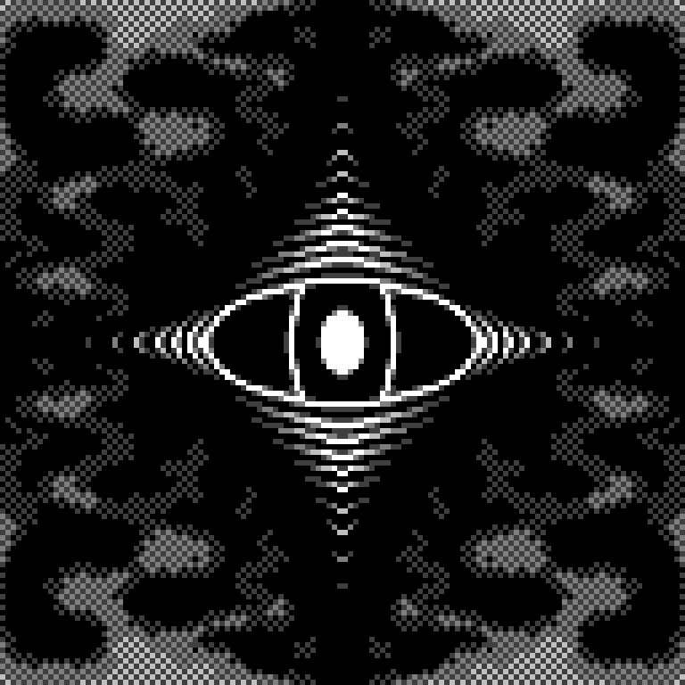
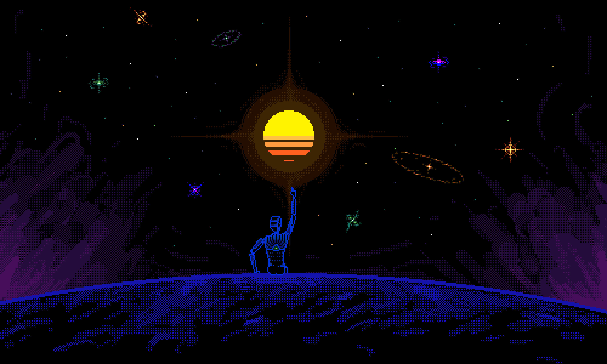
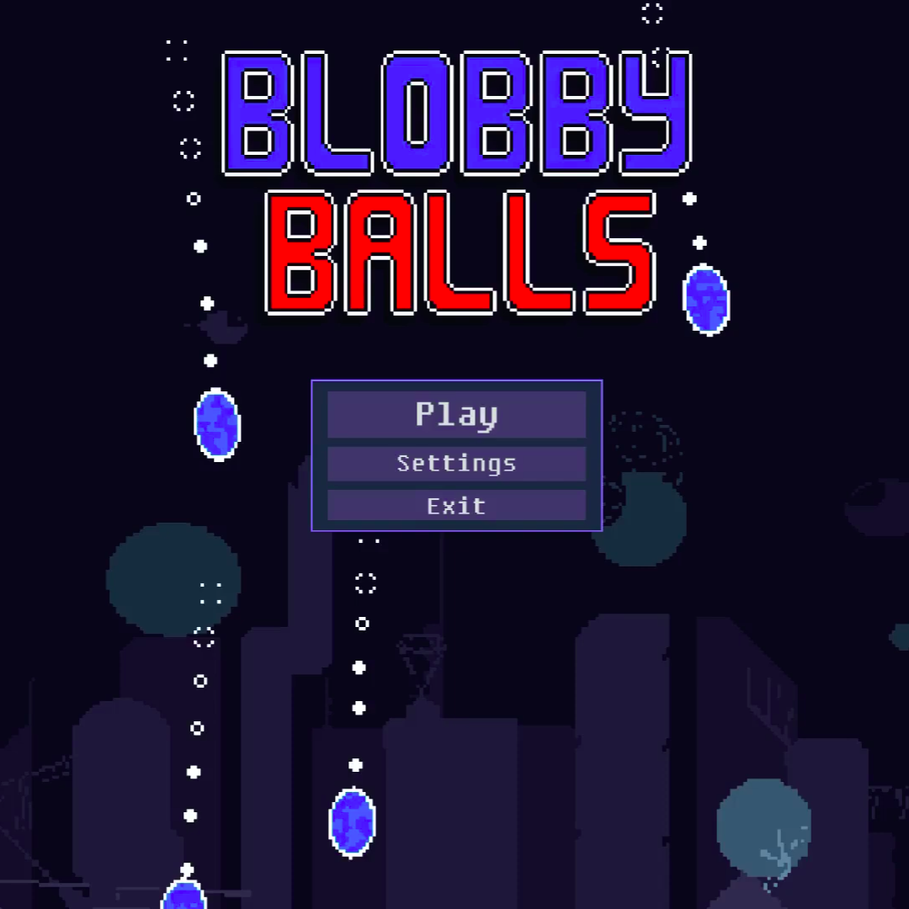
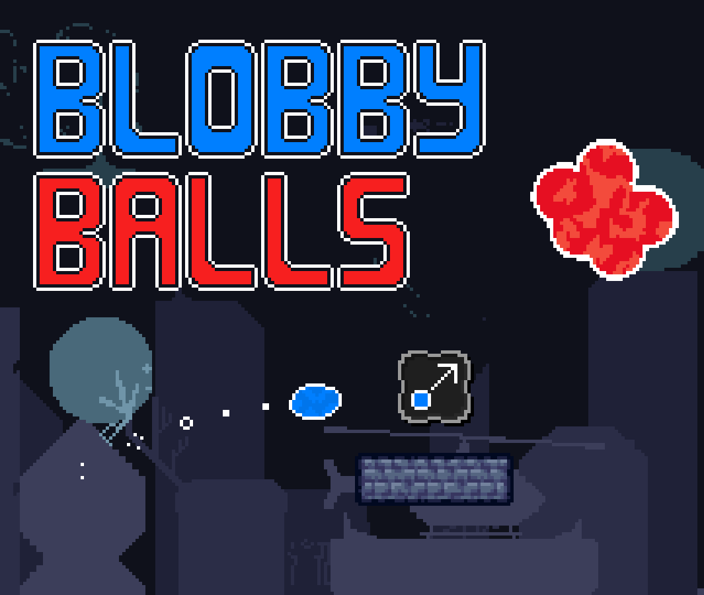

Pixel Art
I've had a relatively good amount of experience in pixel art. The first drawing I had made was 7 years ago
and it was really bad.
Since then I've drawn way more, here are some of my favorites:
I've had a relatively good amount of experience in pixel art. The first drawing I had made was 7 years ago
and it was really bad.
Since then I've drawn way more, here are some of my favorites:
- "Panopticon" (aka "A Mess") 

- "A Picture in Motion"

- "Falcon 9"

- "Alien Aquatic"

- "Portal" (aka "Something")

- "Lightning Strike"

- "Fraulein Humpsch"

- "Ophanim"

- "Panopticon" (aka "A Mess")
- "Alien Aquatic"
- "A Picture in Motion"
- "Ophanim"
- "Falcon 9"
- "Lightning Strike"
- "Fraulein Humpsch"
- "Portal" (aka "Something")
You can check out more on my pixilart!
I started music because of game development, but since then (3 years ago) it grew on me and nowadays I do it more of as a side-hobby. I love synthesizers and experimenting with them, which is probably why I mostly make electronic music honestly. I've also dabbled with ambient, experimental and blues music. Anyway, enough yapping, here's what I've got:
- "HUE"


A debut album containing mostly electronic music. The original idea was 7 tracks, each representing a different hue in the color spectrum, but along the journey 3 bonus tracks were added (one of which will soon get it's official video). All together it's a 45-minute listen. I recommend you play the tracks in the order they are presented in. Hope you like it! My favorite ones are Purple, Pink and Green.
- "Robotic Warfare"

A Single for the HYPER 2 OST. I wanted to really capture the feeling you get when a game becomes crazy and it overwhelms you with a barrage of enemies and mechanics, so that's what this track is all about. My favorite part is the bridge at 1:15, specifically when the synth becomes all distorted and the harsh drums kick in.
- "GOT MY EYES OPEN"

This track is one of my best ones I feel like. It drew inspiration from an album called IGOR and it was unlike anything I had made before not only structurally (more of a build-up track, has two parts to it), but also in terms of genre, which made it feel like a breath of fresh air from my usual EDM-oriented style. For these reasons and also because the mixing was really good (nice job, past me), it has really grown on me.
- "NEP-TUNES"

This one has a really unique energy to it. It has these 8-bit sounds glittered all over it, the electric guitar somehow giving it uplifting energy, all the while the amen breaks bring the intensity to 100. While making this track, I wanted two things: combine fast-paced dopamine-rush video-game tracks with some of my personal taste (which is a weird mix of a variety of genres, mostly electronic music though).
- "Tactical Processing"

A track made for a game me and some friends were making for a 10-day game jam. I really like not only how it fits the game, but also the vibes it gives off as a chill but kind of intense dnb track (World's Hardest Game-type song). It was also interesting having a hard time-restriction while making it, although it proved really not that difficult, as it was composed and mixed very early on and in just 4 days, which is probably why it's only 2 minutes, but yeah.
- "HUE"
A debut album containing mostly electronic, but also ambient, phonk, and blues music. The original idea was 7 tracks, each representing a different hue in the color spectrum, but along the journey 3 bonus tracks were added (one of which will soon get it's official video). All together it's a 45-minute listen. I recommend you play the tracks in the order they are presented in. Hope you like it! It's on spotify and youtube.
- "Robotic Warfare"
A Single for the HYPER 2 OST. I wanted to really capture the feeling you get when a game becomes crazy and it overwhelms you with a barrage of enemies and mechanics, so that's what this track is all about.
- "GOT MY EYES OPEN"
This track is one of my best ones I feel like. It drew inspiration from an album called IGOR and it was unlike anything I had made before not only structurally (more of a build-up track, has two parts to it), but also in terms of genre, which made it feel like a breath of fresh air from my usual EDM-oriented style. For these reasons and also because the mixing was really good (nice job, past me), it has really grown on me.
- "NEP-TUNES"
This one has a really unique energy to it. It has these 8-bit sounds glittered all over it, the electric guitar somehow giving it uplifting energy, all the while the amen breaks bring the intensity to 100. While making this track, I wanted two things: combine fast-paced dopamine-rush video-game tracks with some of my personal taste (which is a weird mix of a variety of genres, mostly electronic music though).
- "Tactical Processing"
A track made for a game me and some friends were making for a 10-day game jam. I really like not only how it fits the game, but also the vibes it gives off as a chill but kind of intense dnb track (World's Hardest Game-type song). It was also interesting having a hard time-restriction while making it, although it proved really not that difficult, as it was composed and mixed very early on and in just 4 days, which is probably why it's only 2 minutes, but yeah.
More where that came from on my youtube channel!
I've been programming for quite some time, 5 years to be exact, and it's been one of those things that I will never get bored of for sure, simply because the potential creativity that lies behind it is enormous.
I started with making levels for a game called PewPew Live, which required Lua knowledge. Then I straight up just jumped to game development in Unity, so I had to learn C#. After a long hiatus of trying to finish two games ("trying" is a very important word here) and then coming very close to doing that on my third one (more on that later), I decided to stop game dev for the foreseeable future and move to software creation in general.
At this point I was learning Rust by making small, non-ambitious programs like a line-of-code counter, a macro utility, etc. Later down the line though, I was chatting with a few buddies of mine when we decided to trying making a programming language for creating PewPew levels, because Lua becomes really awful to work with after a project becomes somewhat big. We wanted to make the transpiler in Go for the sole reason of wanting to learn Go (yeah...).
In the end, after 3 months of summer work, then a year long pause, and then another 3 months of hard summer work, having started with literally zero knowledge of making transpilers, we made Hybroid Live, a domain-specific programming language (more on that later). It was a really fun and fulfilling project, I learned A LOT about compilers and its stages, from tokenization to parsing to validating an AST to generating code from an AST. It was also really cool that we also learned a new language along the way. Go is a surprisingly simple language, which made it really easy to learn. We were probably really lucky we chose that language to make Hybroid Live with.
- Hybroid


A domain-specific programming language, handcrafted for making PewPew Live levels. It's strongly-typed and provides a variety of features that most modern languages have, while also providing special features like repeat statements, better for loops and tick statements. If you don't want to have a headache making PewPew Live levels, this is the go-to language!
- HYPER 2


A rogue-like sorta-top-down endless tower defense games with arcadey graphics and unique game mechanics. Defend your tower for as long as you can from the invasive aliens! Level up, earn money and new units, and strategically place them in the grid for optimal performance! Let's see how long you last... Coming probably not soon to be honest.

A 2D pixel-art fast-paced precision puzzle-platformer game that me and 3 other friends made in 10-days for the Godot Wild Jam #83, using, as you can imagine, the Godot game engine. You have a myriad of levels to complete, the goal being to consume all the red balls, which can become quite mind-racking in some levels. Eat your way into solving puzzle and get rewarded with speedrun medals in the process!
- Hybroid
A domain-specific programming language, handcrafted for making PewPew Live levels. It's strongly-typed and provides a variety of features that most modern languages have, while also providing special features like repeat statements, better for loops and tick statements. If you don't want to have a headache making PewPew Live levels, this is the go-to language!
- HYPER 2
A rogue-like sorta-top-down endless tower defense games with arcadey graphics and unique game mechanics. Defend your tower for as long as you can from the invasive aliens! Level up, earn money and new units, and strategically place them in the grid for optimal performance! Let's see how long you last... Coming probably not soon to be honest.
A 2D pixel-art fast-paced precision puzzle-platformer game that me and 3 other friends made in 10-days for the Godot Wild Jam #83, using, as you can imagine, the Godot game engine. You have a myriad of levels to complete, the goal being to consume all the red balls, which can become quite mind-racking in some levels. Eat your way into solving puzzle and get rewarded with speedrun medals in the process!